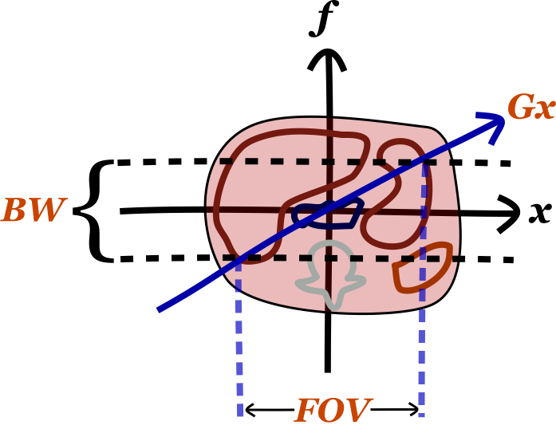
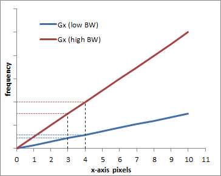
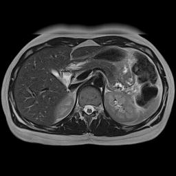
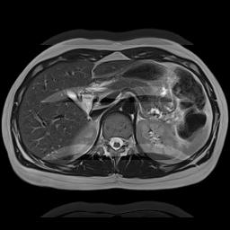
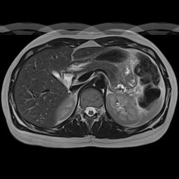
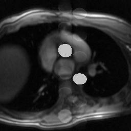

Explanations of Bandwidth and Reduced K-Space Acquisition
Bandwidth
Just like in radio, bandwidth refers to the range of frequencies that a receiver listens to. Remember than in MRI, the frequencies encode one spatial dimension (for sake of discussion, the x-axis). (Of course, these are on top of the 'carrier frequency' which is the precession rate of a proton in the main magnetic field B0 as given by the Larmor equation.)
There are several important things to know about bandwidth. The first is its relationship to the frequency encoding gradient strength (Gx) and field of view (FOV). As mentioned, the gradient field sets up a relationship between frequency and position along the x-axis. Thus, since the bandwidth determines the range of frequencies we receive, it determines our FOV.

The second important thing to know about bandwidth is that it impacts the time required for the acquisition of the echo. Wider bandwidth means more high frequencies, and high frequencies are faster to acquire (though your sampling frequency has to be higher as well, per the Nyquist theorem). Thus, higher bandwidth takes less time to acquire. This is important for fast gradient echo sequences (e.g. 3D GRE), though less important for many standard FSE sequences (since TR is so long). A more detailed discussion on this subject can be found in the separate section on K-space.
Thirdly, bandwidth affects signal-to-noise (SNR). One major source of noise in MRI is electronic noise in the circuits. This noise is relatively evenly spread across all frequencies. As mentioned, increasing bandwidth means increasing the range of frequencies that you are acquiring for your signal. More frequencies means you are capturing more of the noise. The overall signal does not change, it is just spread across more frequencies. Thus, same signal and increased noise means that SNR goes down with higher bandwidth.
As a final point, bandwidth also impacts the prominence of chemical shift artifact, which is the difference between the precessional speed of fat and water protons. For a full discussion, see the separate section on Chemical Shift Artifact, but remember that the gradient sets up a frequency differential along the x-axis. The bigger the gradient, the more adjacent pixels are separated in frequency (big gradient => wide bandwidth for the same FOV, since our frequency range has to increase).

Graph illustrating the difference between a low BW = low gradient (blue) and a high BW = high gradient (red). Obviously, the frequency difference between pixel 0 and pixel 10 is bigger with the higher gradient, which is why a larger bandwidth is needed. The graph also shows how each pixel (e.g. pixels 3 and 4) are more separated in frequency with the higher bandwidth.
Thus, the bigger the gradient, the better fat and water, with their slightly different precessional frequencies, will fit into the same pixel bin. In other words, increasing bandwidth reduces chemical shift artifact. Artifacts from metal implants are related to the susceptibility of the implants, i.e. how they change the local magnetic field. Near the implants, the magnetic field will be off by a bit, meaning that the precession frequency f = γ * B will be slightly off. Thus, for the same reasons as with chemical shift artifact, metal artifacts will decrease with higher bandwith.
K Space
K space is a very confusing concept to wrap your mind around fully. The easiest aspect to think about is the concept of frequency data (K space) as compared to pixel data (image or real space). Higher frequency waves are narrower, so they represent the finest details in an image. Think about a sharp edge - the color changes very fast as you cross an edge, i.e. the frequency of change is high. Thus, as you know, the perimeter of K space, which is the high frequency data, represents fine details. The center of K space - low frequency information - represents the smoother parts of the image, like major organs (people refer to this as the contrast in the image). K-Space is discussed in more detail in the section on Spatial Localization in MRI.
Often we want to speed up our scan by decreasing the number of phase encoding steps. One way to do this is simply not acquire some parts of K space. There are several different ways to do this:
- Half-Fourier acquisition - We will not discuss this in detail, but this technique relies on underlying symmetry in the Fourier transform to reconstruct the image with less data. Resolution does not change, but since we're acquiring less signal, we have to deal with more noise - SNR goes down.
- Scan percentage - We can just not acquire the very periphery of K space (only in the phase encoding direction, as frequency encoding is pretty much free). Since we are not measuring the highest frequencies, our image gets a bit blurry (we lose some of those sharp lines), and thus our resolution goes down.
- Rectangular field of view - We can just not acquire the outer parts of the image (again, only in the phase encoding direction). Thus, instead of a square, we get a rectangle. This does not sacrifice resolution, but since we are acquiring less signal, our SNR goes down as well.
The more confusing concept having to do with K space is spatial frequency. This represents converting the pixel-based frequency data that we acquire into millimeter- or distance-based frequency data. The MR machine knows how to do this because it knows how strong the frequency and phase-encoding gradients are, per millimeter. The confusing aspecct is that spatial frequency is expressed in units of inverse distance.
Artifacts
Try the above MRI artifact simulation to see how different artifacts appear in the image and in K-space. All MR artifacts follow from how MR images are acquired. Thus, if you understand K space and how an MR scanner works, you should be able to figure out the artifacts.
Spike - This artifact may also be referred to as a stripe or zebra artifact since it produces diagonal lines in the iamge. It's caused by a malfunction in the electronics or connections within the scanner so that a single point in K space incorrectly gets a big signal spike. The position of the spike will affect exactly how the artifact appears - remember that the frequency encoding direction is along the horizontal axis and the phase along the vertical. Thus, the farther to the left or right, the closer together the artifact's lines will be. Up/down will affect the angle.
Radiofrequency Contamination - This is often referred to as the zipper artifact since the appearance is a dashed line. It's caused by noise of a single frequency getting into the scanner room. Remember that the MR scanner is an extremely sensitive radio receiver. If any outside radiowaves get into the room, the scanner will pick them up. Usually the problem is that the door to the room was left open, although there may be a problem with the room's Faraday cage. Because frequency encodes one spatial dimension (here, the left-right axis of the patient), you will get a line at a certain position along that spatial dimension. The position will correspond to where that the scanner 'thinks' that frequency should be (i.e. where the frequency gradient makes protons have that particular frequency - the scanner gets fooled by this outside frequency). (Note that in the example here, there are 2 lines because of the symmetry of the Fourier transform, but that will not necessarily be the case with real-world signals.)
Motion - Patient motion happens far more slowly than frequency encoding (which occurs in milliseconds) but it does occur on the same timescale as phase encoding (seconds). Remember that in a spin echo sequence, each phase encoding step requires 1 TR interval (in fast spin echo, you can lump a bunch of phase encoding steps in one TR, so that decreases the effect). The scanner has no way of knowing the patient moved, so it tries to reconstruct the image from inconsistent data. You get 'ghosting' artifacts in the phase encoding direction because the signals don't all match up.
"Camera Blur" | Phase Encoding AP | Phase Encoding LR |
|  |  |  |
Simulation of the effects of respiratory motion. This is a somewhat cruder simulation of respiratory motion than the example above, but it illustrates the same phenomenon. Respiratory motion causes movement of the anterior abdominal wall. Left, if the MRI scanner were a camera (or CT scanner), motion would blur the image only where it occurs. Center, with the phase encoding in the A-P direction, respiratory motion propagates across the image from front to back (coincidentally the same direction as the physiologic process). Right, with the phase encoding in the L-R direction, respiratory motion propagates across the image from left to right, only affecting the anterior organs. Note that changing the phase encoding gradient direction to LR allows one to better visualize the other organs.
There are various strategies to minimize these motion artifacts:
- Change the phase encoding direction. Motion artifacts are mostly a problem when they obscure some anatomy of interest. Thus, one solution is to switch the direction of phase encoding (e.g. from A-P to L-R). In that way, the motion artifact will propagate in a different direction. This explains why in breast MR, phase encoding is typically done along the left-right axis (rather than the shorter AP axis): the acquisition is longer but this way, motion artifact from the heart does not obscure the inner breasts.
- Gating. You can use ECG gating to 'freeze' the motion of the heart (and blood within vessels). The scanner will acquire data for the image at the same point in the cardiac cycle, so there is no inconsistency in the image across the phase encoding steps. This is used extensively for cardiac MRI. Similarly, you can freeze respiratory motion using physical patient monitors or so-called Navigator sequences that allow the scanner to acquire images in a single part of the respiratory cycle.
- Saturation bands. You can place a saturation band across the heart to completely suppress its signal. Thus, there will be no signal ghosting because the structure itself has no signal. This is most commonly used in spine MRI.
- Motion-insensitive sequences. Some MRI sequences are relatively insensitive to patient motion. These generally involve different methods of sampling k-space, particularly radial trajectories. Instead of sampling k-space one line at a time in a rectangle, the scanner will sample lines or small rectangles of different angles across k-space. Because phase encoding occurs in different directions for each line, that tends to minimize the motion artifacts in the image.
Vascular Pulsation Artifact. Pulsation artifact or vascular ghosting occurs when rapidly flowing blood vessels are present in the imaging plane. Blood flowing through these vessels pulsates at the patient's heart rate (i.e. there is greater and faster flow during systole). Because phase encoding occurs over several seconds, each slice will be made up of data acquired during systole and during diastole. For the same reasons as respiratory motion, the difference within the vessel from systole to diastole will cause an artifact to propagate in the phase encoding direction. For more detailed discussion of this and other consequences of blood flow, see the page on flow-related phenomena in MRI.

Simulated pulsation artifact, with phase encoding in the AP direction.
References
- Hashemi, R. H., Bradley, W. G. & Lisanti, C. J. MRI: the basics. (Lippincott Williams & Wilkins, 2010).
- ReviseMRI.com
Applet and content Copyright 2013-2014 Mark Hammer. All rights reserved.